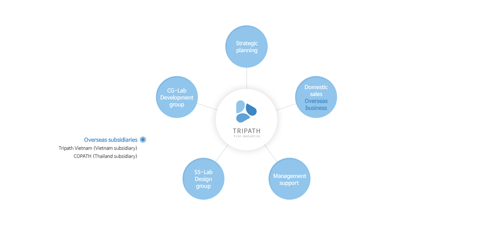

- Imagine and challenge.
- Hãy tưởng tượng và hiện thực hóa điều mà bạn nghỉ
- Dịch vụ Website
- Ứng dụng
Mobile - UX / UI / GUI
- Thiết kế giao diện phần mềm
Media - Hệ thống
quản lí khách hàng, hệ thống hoạt động và bảo trì - Hệ thống IP
kiến trúc hệ thống
Chúng tôi vượt qua thách thức bằng sự quyết tâm và niềm đam mê
Để thực hiện được điều đó, Tripath sẽ luôn trong tình trạng tỉnh táo để có thể tìm ra vấn đề và giải quyết nó môt cách tích cực.
Đồng thời, dựa trên nền tảng của sự quyết tâm và niềm đam mê, “Tưởng tượng và thách thức” là sứ mệnh của Tripath cần thực hiện để vượt qua thử thách trong sự đổi mới sáng tạo.
Tripath là doanh nghiệp IT sáng tạo ra những giá trị mới dựa trên nền tảng của sự thấu hiểu về công nghệ, con người và thị trường.
Với Slogan “Tưởng tượng và thách thức”, chúng tôi mong muốn trở thành doanh nghiệp có thể chinh phục được những thách thức mới và tạo ra những sản phẩm mang nét riêng.
Chúng tôi không bao giờ quên rằng tài sản quý giá duy nhất của doanh nghiệp là nhân tố “con người” và chúng tôi sẽ nổ lực không ngừng để tạo ra môi trường có thể nuôi dưỡng nhân tài và giúp họ phát triển khả năng của chính mình.
Chân thành cảm ơn.
CEOKim Dong-jun, Jeong Yu-seok

- Thúc đẩy phát triển
giải pháp Qsale,
nhận hợp đồng cùng với vận hành dịch vụ. - Xúc tiến kinh doanh
và bảo trì SI - Phát triển giải pháp doanh nghiệp, vận hành dịch vụ cùng với hoạt động kinh doanh ở nước ngoài
Thành lập
| 2016 | 10. | Phát triển LG Care GENESTORY |
|---|---|---|
| 09. | Kí kết hợp đồng thực hiện xây dựng chỉ số hóa trang điểm thông minh cho LG Care | |
| 08. | Giải pháp hỗ trợ kinh doanh bằng AI dựa trên machine learning, được chọn lựa bởi Tips Program (chương trình hỗ trợ cho doanh nghiệp start up trong lĩnh vực công nghệ của những nhà đầu tư cá nhân) | |
| 08. | Đạt được bằng phát minh sáng chế về phương pháp cung cấp tư vấn Online, sever cùng với thiết bị đâu cuối (Bằng sáng chế số 10-1649254) | |
| 06. | Hợp động để cung cấp giải pháp doanh nghiệp mới và Qsale/ Colon Global Inc. | |
| 06. | Được bầu chọn là 1 trong 300 doanh nghiệp K-Global bởi Bộ Khoa học, ICT và Future Planning | |
| 05. | Nhận được lời mời đầu tư Coolidge Corner |
| 2015 | 12. | Xây dựng China MCN pkatform của LG Care và mỹ phẩm CNP |
|---|---|---|
| 10. | Đạt giải nhất trong cuộc thi triễn lãm “Ý tưởng khởi đầu” được tổ chức lần thứ ba bởi trường đại học Hàn Quốc | |
| 10. | Vào Trung tâm Đổi mới Kinh tế Sáng tạo Bắc Chungbuk và kí kết thỏa thuận doanh nghiệp | |
| 09. | Đưa ra giải pháp bán hàng Online sử dụng ADT CAPS/Qsales | |
| 08. | Phát triển website Viện phát triển nguồn nhân lực Lotte | |
| 05. | Tạo ra trang chủ của Pico Island- một công viên giải trí dành cho trẻ em do BMW Hàn Quốc và Germany Motors Inc đầu tư | |
| 03. | Tiến hành dự án ưu tiên để phát triển một số phụ kiện sử dụng cho NFC của Samsung Electronics | |
| 01. | Mở dịch vụ Qsales close bate của công ty |
| 2014 | 12. | Trở thành nhà tư vấn cho doanh nghiệp EV Care Venture Incubating |
|---|---|---|
| 10. | Thành lập viện nghiên cứu dành cho doanh nghiệp Tripath Co., Ltd. | |
| 04. | Bắt đầu phát triển Qsales | |
| 03. | Thiết lập dịch vụ thương mại hóa cho ví điện tử thông minh IMH | |
| 01. | Đạt được bằng phát minh sáng chế về Server cung cấp dịch vụ chia sẻ nội dung trực tuyến, cách thức cung cấp và phương pháp lưu trữ (Bằng sáng chế số 10-1350712) |
| 2013 | 12. | Tung ra thị trường dịch vụ của công ty, Qadvice beta test |
|---|---|---|
| 11. | Đạt được chứng nhận doanh nghiệp đầu tư mạo hiểm từ Hiệp hội Venture Capital Hàn Quốc | |
| 04. | Thi hành đầu tư của công ty đầu tư Mạo hiểm Hàn Quốc |
| 2012 | 10. | Đăng kí mô hình kinh doanh trực tuyến chia sẻ nội dung Online |
|---|---|---|
| 08. | Mở dịch vụ Wondercube của công ty |
| 2011 | 01. | Thành lập công ty Tripath Co., Ltd và bắt đầu phát triển dịch vụ Wondercube của công ty |
|---|

(Gasan- dong 660) số 208 - 209, ACE High-end Tower, 30 đường Gasan Digital 1, quận Geumcheon, Seoul, Korea 08591T070. 7574. 7676F02. 2622. 8208Einfo@tripath.co.kr
Đi bộ khoảng 5 phút,Từ lối ra số 2 ở  ga Doksan đến khu vực Gasan Digital
ga Doksan đến khu vực Gasan Digital